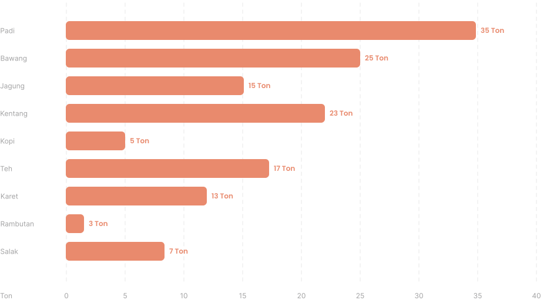

Produktivitas
Daerah
Provinsi
Komoditas
Hasil Produksi
Durasi
1 Minggu
| Kabupaten/Kota | Rencana | Hasil | Persentase |
|---|---|---|---|
| Purworejo | 1 Ton | 1,2 Ton |

20% Lebih tinggi |
| Banjarnegara | 1 Ton | 1,8 Ton |
80% Lebih tinggi |
| Wonosobo | 1 Ton | 990 Kg |

1% Lebih rendah |
| Klaten | 1 Ton | 870 Kg |
13% Lebih rendah |
| Magelang | 1 Ton | 987 Kg |
1,3% Lebih rendah |
| Solo | 1 Ton | 1,01 Ton |
1% Lebih tinggi |
| Bawen | 1 Ton | 1,1 Ton |
10% Lebih tinggi |
| Salatiga | 1 Ton | 961 Kg |
3,9% Lebih rendah |
| Kebumen | 1 Ton | 1,5 Ton |
50% Lebih tinggi |
| Tegal | 1 Ton | 900 Kg |
10% Lebih rendah |
| Sub total (10 Baris) | 10 Ton | 11,318 Ton |
13,18% Lebih tinggi |
| Total Padi | 1.000 Ton | 111,318 Ton |
20,18% Lebih tinggi |
Produksi per Jawa Tengah
